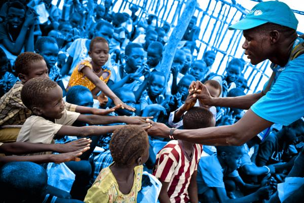
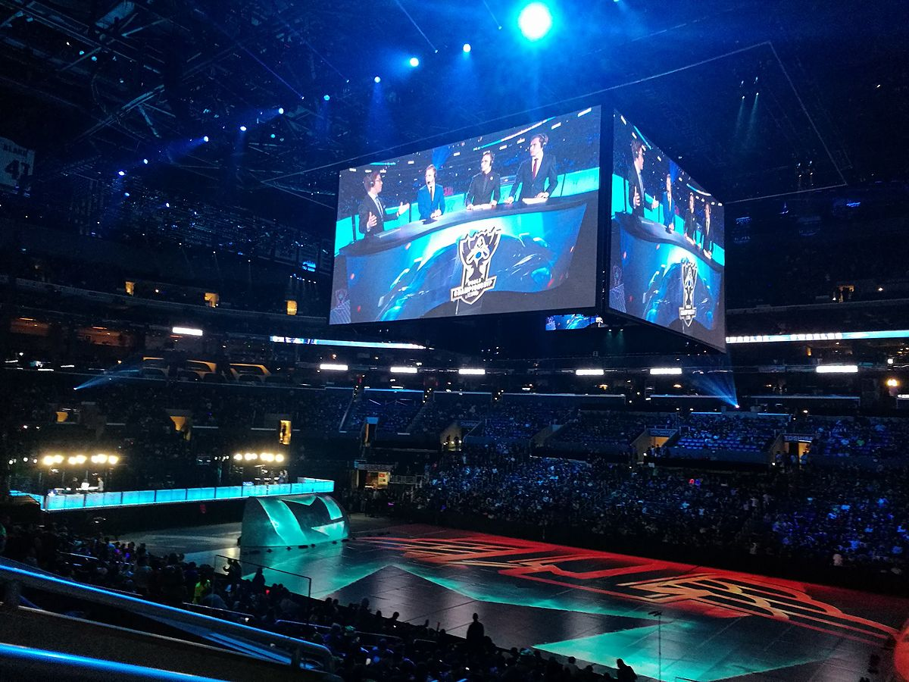
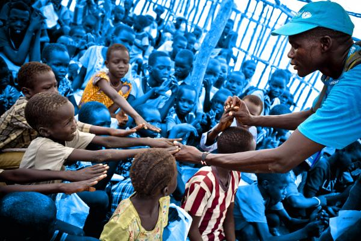
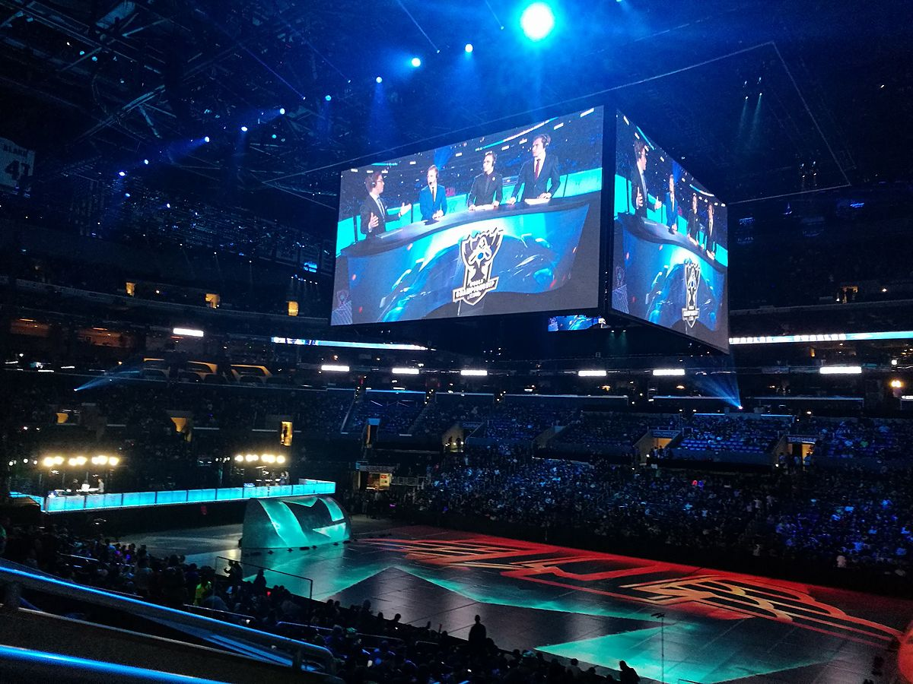

Ashley Ang
I am pursueing marketing specifically as I’ve found that it is the most practical subject that has interested me. My goal would be to work at a gaming company and use either my marketing or art skills to aid them in their development. Gaming, art, and (now) marketing has been the three biggest passions in my life and I would love to contribute to the community even further. Seeing as how video games have helped me persevere through difficult times in my own past, the thought of being part of the process of creating games (to potentially help others in rough times) makes me happy.
In the summer before senior year, I decided to open an e-commerce store that sells unique phone accessories. Without prior experience or guidance, I actively researched on required documents for selling and proceeded to acquire them. This includes maintaining DBA/FBN, Sellers/Sales Tax Permit, EIN, and business licenses. I currently manage all responsibilities of the store from marketing/sales strategies, social media (Instagram), website/graphic design, to financing/bookkeeping, and filing taxes. I started this as a hobby and found it quite rewarding as I’m able to work from home and advance my capabilities in marketing and communication. This hobby has given me a sense of security knowing that I’ve gained knowledge on the things I would need later in life such as the experience of filing taxes and owning a credit card.
One activity I have been frequently involved in is being a part of the National Honor Society officer team. National Honor Society is a nationally recognized club that emphasizes scholarship, leadership, and excellence. NHS differs from other clubs since an intimidating 3.5 unweighted GPA is required, but that truly just distinguishes the honor this club exemplifies. With more than one million students participating in its activities worldwide, NHS provides opportunities to serve the community in a variety of ways. This includes volunteering at soup kitchens, local farms, and charity walks to help and support those in need. As Project Coordinator, my responsibility was to provide volunteering opportunities by contacting local event organizers from Los Angeles to Orange County. The most important activity I participate in outside of school however, is managing my self-made business. It is symbolic of my determination to succeed despite many hardships. Even though I was faced with adversities, such as lack of time and self-doubt, I was able to follow through with my plans. I became even more motivated when I assured myself of my ability to do things purely out of my own will. From getting promoted on Instagram for the first time, to being eligible for a business credit card, completing these tasks made me ecstatic. With this experience, I learned that life is filled with victories and failures which are to be learned from. With my victories, I found that they should motivate me to continuously strive for the better. With my failures, I realized the importance of one’s willingness to accept reality and passionately learn from mistakes.
Experience
UNICEF
UNICEF (United Nations Children's Fund) is a nonprofit organization that focuses on helping children on a global level through fundraising and educational opportunities. UNICEF supports the growing movement rooted in a belief that students have a vital role to play in helping the world's children survive. A few examples of volunteer events provided would include donation drives (raising money or donating clothes/canned goods), participating in soup kitchens, and helping local organizations (such as Discovery Cube and Operation Christmas Child). Volunteers of UNICEF take pride in their willingness to help those in need and actively reach out to both local and distant communities.
eSports
eSports aims to help students have fun in a school environment and learn valuable skills that will serve them well throughout their life. Among the skills developed through esports are: strategic thinking, teamwork, collaboration, goal setting, preparation, and managing success and failure – not to mention quick reflexes. Competitive esports is also available, providing a way for like-minded students to meet in person on a regular basis, in pursuit of common goals – providing a sense of belonging for those who might otherwise opt out of school activities. As prior secretary and current event coordinator, my role is to help manage the club effectively and plan both casual and competitive events for any DBHS student.
Education
University of California Riverside
Portfolio



 